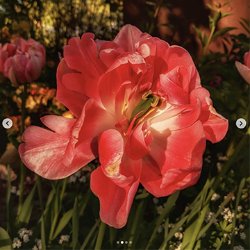
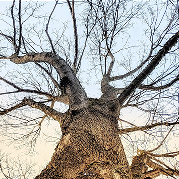
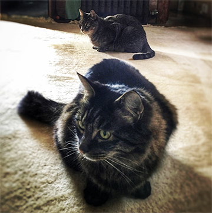
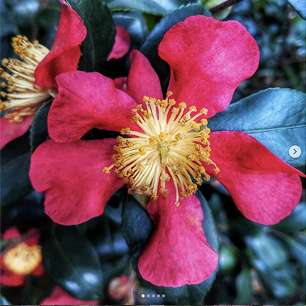

|
home | welcomeThis website was coded in HTML and CSS to feature work I've created as a student in BTS 189 at Bellevue College. Besides this website, you'll find other HTML and CSS samples that were coded in this class, as well as videos that were created for other courses at Bellevue College during 2019. I'm an avid smartphone photographer and post to Instagram, Flickr, my blogs, and other social media channels. To the left are four photos from my Instagram page. They use a “hover” filter. |
BTS 189 and other classes here have added depth to my knowledge and understanding of what is beneath the surfaces of what we see each day–whether it's the HTML and CSS that creates a site like this, or understanding why a target market will be more receptive to certain marketing messages more than others.